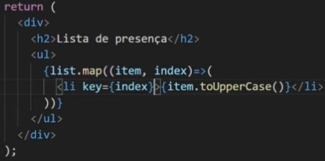
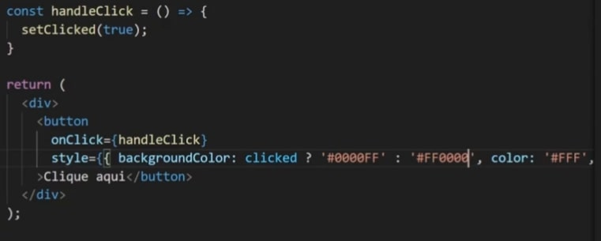

React JS.
O que é React JS ?
React é uma Biblioteca feita em JavaScript criada e mantida pelo Facebook. Vem com o objetivo de deixar as páginas mais "leves". Para começar a compreender, vamos relembrar do DOM. Dom é básicamente todos os elementos que estão na tela do browser. Cada item (botao,etc) é um elemento, e através do DOM conseguimos selecionar um elemento em específico e manipula-lo, adicionar evento, etc. Isso demanda processamento do computador do usuário que está acessando e dependendo do que você fizer, isso pode ser muito custoso.
Já no React isso não acontece, pois o react trabalha com o Virtual Dom. A grosso modo, é básicamente uma cópia do que você está vendo no computador só que direto na memória, uma cópia virtual. Você não ve mais ela existe.
Dessa forma, quando usamos React, ao realizarmos alguma alteração na página, na verdade inicialmente ela é alterada apenas na cópia (VirtualDom) e depois ele compara a tela(DOM) com o resultado da modificação feita no (VirtualDom), e em seguida, ele faz a alteração apenas naquele item em que foi alterado. Dessa forma o processamento é reduzido drasticamente, pois só é processado no DOM (browser) aquilo em que foi modificado e não o DOM inteiro.
Entendendo isso, que é a forma como o react trabalha, existe um conceito chamado SPA - Single Page Application, que é uma aplicação de uma página. Quando fazemos um projeto feito em react, nós temos apenas uma página e tudo é alterado dentro dessa mesma página.
Para instalar o React é necessário que seja instalado o Node, caso não saiba, vá para o nosso Módulo de Node.
Formas de criar projeto com React JS
Dentro do React existem várias formas de criarmos nossos projetos, aqui veremos as duas mais utilizadas no mercado.
Instalando via CRA - Create React App
Para começarmos, colocamos o comando: npmx create-react-app nomedoprojeto caso queiramos utilizar o React com JS. Já caso queiramos utilizar o React com TS, utilizamos o comando: npmx create-react-app nomedoprojeto --template typescript.
Para rodar o projeto, abrimos o terminal do VSCODE, e rodar o comando: npm start dessa forma ele já irá abrir o navegador com nosso projeto rodando geralmente na porta 3000.
Instalando via Vite
Basicamente o vite é uma biblioteca que nos auxilia a criar projetos entre várias outras coisas. Ele geralmente cria o projeto de forma mais rápido do que o normal. Aqui utilizamos o comando npm init vite nomedoprojeto -- --template react-js em caso de usar o React com JavaScript. Já caso queira utilizar o React com Typescript, colocamos o comando: npm init vite nomedoprojeto -- --template react-ts
Em seguida, utilizamos o comando npm install para instalarmos todas as bibliotecas, e estará configurado/pronto para ser utilizado. Você irá reparar que ele será praticamente igual, seja criado por CRA ou VITE.
Aqui para rodarmos o projeto colocamos o comando npm run dev.
Visão Geral de um Projeto Iniciado com React JS
Aqui iremos começar a entender tudo que vem dentro do projeto React criado. Para começar, vale saber que temos algumas diferenças sutís entre o projeto criado com CRA e com VITE (porém minúsculos detalhes).
Dentro da CRA, teremos a pasta PUBLIC, onde irá conter o arquivo INDEX HTML. É dentro desse arquivo index, que possui apenas uma div que toda a sua aplicação será renderizada. Já no VITE é um pouco mais limpo, e está fora da pasta public.
Em ambos os projetos terão uma pasta SRC, no qual dentro do CRA temos o APP.tsx e dentro do VITE temos o MAIN.TSX. Em sintaxe ambos os arquivos são exatamentes iguais. Em outras palavras, ali é onde está ordenando pegar o projeto inteiro e renderizar dentro da div principal. (Aqui eles pegam e jogam na tela). Agora, o projeto mesmo, está localizado dentro do arquivo APP.TSX (igual em ambos). Ali encontraremos o código da página em si.
O código Fonte fica dentro da pasta SRC.Componente
Geralmente a primeira coisa que fazemos quando estamos começando uma aplicação em React é ir no arquivo App.tsx e apagar tudo que está dentro dele. Todo o React é baseado em Componentes. Componentes são partes ou até mesmo um todo. Componente é basicamente uma função que geralmente retorna algo gráfico.

Agora ao rodarmos o projeto teremos nosso primeiro Olá Mundo feito em ReactJS. Sempre que falarmos em criar um componente, provavelmente estaremos falando em criar uma função que retorna geralmente algo gráfico, podendo ser uma div, um botão, uma interface por completo. Tudo que iremos criar irá rodar dentro desse componente principal, inclusive podemos usar componentes dentro de componentes, passando dados ou não.
JSX
Antes de realmente mergulharmos no mundo do react, é importante entender sobre o famoso JSX e suas expressões. Ao criar o seu primeiro componente você irá perceber que foi utilizado HTML dentro de uma função JavaScript. Na verdade o que vimos não é HTMl(apesar de parecer bastante), e sim JSX. JSX é uma forma de digitar o código de forma mais simples, porém antes de ser exibido ele será convertido (pelo babel), e recria utilizando o código sem ser com JSX.
Basicamente na ilustração abaixo, mostra primeiro como que fica o código compilado pelo Babel e em seguida como que é mais simples digitar via JSX.
Em resumo, é um pseudo HTML que é traduzido em código JavaScript que é traduzido pelo compilador que no caso é o Babel. Provavelmente iremos reparar maiores diferenças entre o html e o jsx quando formos utilizar css inline, classes, id's, etc.

Agora que já entendemos o que é o JSX e que ele simplifica a escrita de JS para HTML, vamos começar a entender o porque ele se torna realmente útil para nossas aplicações.
Expressões no JSX
Uma outra das várias vantagens do JSX é que além de colocarmos código HTML dentro do universo JS, também podemos colocar JS dentro do HTML. Para jogar uma variável dentro do JSX basta colocarmos {}, e tudo que fica ali dentro vira JS, na qual podemos fazer qualquer coisa do universo JS. (contas,etc). Nesse exemplo abaixo, mostro um exemplo do uso de expressões:

Usando vários Componentes
Aqui é onde começamos a aprender realmente o fluxo do ReactJS, é a "vida real" dele. O ideal é que separemos cada componente em arquivos diferentes. Todo componente nós utilizamos ele como se fosse uma tag do HTML, abrimos e fechamos nele mesmo. Veja um Exemplo Abaixo:

Mas quando criar um componente ? Sempre que temos um bloco de código grande que precisemos de manutenção, criamos um componente. Sempre que uma parte for reutilizável devemos também criar um componente.
Cada componente deve ficar em um arquivo separado, pois imagine um software real onde teremos 200 componentes e todos no mesmo arquivo. Ficaria praticamente impossível localizarmos e darmos manutenção. Então como boa prática, dentro da pasta src criamos uma pasta com o nome de components, e lá colocamos os mesmos (importando e exportando).
Props em Components
Aliado com Components, props também é a base para a criação de aplicações WEB. Imagine que o cabeçalho acima tenha um texto personalizavel por exemplo. Ficaria inviável ficar criando um componente para cada texto que deseja exibir no cabeçalho. Para isso existem as props. Props são os "atributos do HTML". No JSX temos os componentes e as props ( que no html seria a tag e o atributo). Para criarmos uma prop, colocamos por exemplo :

Dessa forma você irá perceber que o typescript irá reclamar da palavra TITLE. Isso acontece, pois além de enviarmos as props para algum componente, é necessário que esse componente que irá receber esteja ciente/esperando receber as props. Para isso ele é recebido no parâmetro da função. Como estamos utilizando o TypeScript, é necessário typarmos essas props. Por padrão, criamos um type com o nome prop(como ele está dentro de um ecossistema separado, colocamos o nome de props mesmo). Exemplo abaixo de um componente recebendo props:

Para utilizarmos essas props, podemos ou receber no parâmetro a props por inteiro e utilizar {props.atributoPassado}, ou podemos desestruturar somente o que iremos usar e receber {}.
Assim como no TS normal, ao typarmos as props no componente que a receberá, podemos colocar ? após o seu nome, para que ele passe a ser opcional. name?: string;. Caso não seja colocado esse operador ? ele não irá aceitar a chamada do componente em questão sem a prop.
Children & Fragments
Outro conceito de extrema importância da base de React, é o conceito de Children e de Fragments. O conceito de fragment dentro do react é que nós só podemos retornar um único elemento. Não é possível retornar mais de um elemento. Por exemplo: Imagine que tenhamos uma div, e dentro dela um h1 e um p. É possível retornar esses 03 elementos, pois na verdade o que está sendo retornado é apenas uma div. Porém existirá casos no qual não caberá uma div, e você precise retornar apenas o h1 e o p (porexemplo). Nessa hora que entram os fragments. Fragments é uma forma de "envelopar" < > conteúdo < /> , para que consigamos retornar mais de um componente. Resumidamente o fragment serve para burlar a regra do retorno de um único componente.
Mas e o Children ? Children é quando temos um componente que não abrimos e fechamos no mesmo item ou seja, abrimos e fechamos de forma separada.
FALTA REVER CHILDREN
States & Events
Criando Eventos
Já conhecemos o que são eventosdos nossos estudos de JS. (Caso não lembre volte ao módulo de Js-DOM). No React utilizamos a sintaxe: onClick={}. Agora precisamos criar uma função, passar a denifição dela e por fim cria-la.
Segue o exemplo:
Também é possível criar uma função anonima c/ arrow function dentro dos {}.Evoluindo veremos vários tipos de evento, como evento de teclado, mudanças de algo, etc. Mas para avançar é de fundamental saber a base de como definir e como funciona sua estrutura.
Usando State
Aqui é onde começaremos a estudar os famosos Hooks do react. Hooks nada mais são do que funções do JavaScript, podendo ser executados por si só. Para entendermos o conceito de state precisamos saber que o React JS trabalha com o conceito de imutabilidade, ou seja, no React nós não alteramos nenhum dado em específico e sim trabalhamos com seu estado. Não adiantaira mudar uma variável diretamente pois assim que isso acontecesse o componente seria executado novamente e dessa forma ele voltaria pro seu valor original.
Exemplo : Caso você tenha uma tag p, como valor 'Guilherme', e alteremos ele para João via função por exemplo, o nome seria alterado em memória, o componente inteiro seria renderizado novamente, e em seguida voltaria a assumir o seu valor inicial.
Enfim entramos no useState que serve para gerenciar o estado de algum valor onde poderemos alterar e consultar também. Vamos a prática:

Aqui atribuimos o useState com o valor inicial de Matheus, para a variável name. Porém ao darmos um console log nessa variável, iremos perceber que o useState retorna um array com duas posições. O primeiro valor é o seu valor inicial setado na função acima, e a segunda posição é uma função, que servirá para alterar a variável inicial em questão(nesse caso o name), que por padrão nomeamos com setName, ou setIdade, enfim, set o nome da variavel em questão.
Agora que já entendemos a estrutura do useState (variavelAtual, funçãoParaAlterarEstado => useState('ValorInicial)), é necessáriio saber que o usestate sempre será visto de forma desestruturada. Exemplo:
const [name, setName] = useState('Guilherme')
Dessa forma, sempre que em tela precisemos alterar o valor de name, utilizamos o setName.
Podemos ter um botão com um evento onClick que ativa uma função mudarNome, por exemplo, dentro dessa função usamos o setName('GuiGui'), que ela será alterada.
Sempre que utilizamos essa função (vinda no segundo parametro do useState), temos como receber um prevState por parâmetro. Esse prevState apenas nos informa o valor do estado atual. Como boa prática, ao invés de mudarmos direto, podemos ativar uma function para se blindar de possíveis erros.
setNumber((prevState)=> prevstate + 1)
Dessa forma podemos nos "blindar" de double clicks, entre outros possíveis mini-bugs que o react pode vir a oferecer.
Aqui abaixo temos um exemplo do uso de useState dentro de um input, onde pegamos o nome digitado e replicamos embaixo.

Comunicação entre Componentes
Quando a comunicação entre componentes se dá de pai para filho, uma das formas que temos de comunicar é pelas props, vistas nos tópicos acima. Mas e quando precisamos passar de filho para pai ? Vai ser normal em nossa caminhada nos depararmos com cenários na qual iremos precisar ao clicar em algo dentro de um componente, ativar alguma função que esteja do lado de fora dele(em algum outro componente).
Por exemplo, dentro do componente app, temos o comopnente botao. Assim que clicarmos no botão, queremos ativar uma função que está dentro do componente App, como resolver? Para solucionar, nós declaramos a função a ser executada normalmente dentro do componente App, e em seguida passamos essa função via PROPS para o componente botão. Não precisa ser o mesmo nome da função declarada. Resumo: No componente App voce cria a função botaoEventAction e la nas props, voce pode passar como clickFn={botaoEventAction} por exemplo. Dessa forma, o componente botao irá receber essa props, e lá ativar o evento onClick={clickFn} .
Exemplo em código abaixo:
Componente app enviando a função via prop:

Componente Botao recebendo a função via prop:

Outra coisa que temos que nos atentar, é que é possível enviarmos uma frase por exemplo do filho para o pai via parâmetros.
Renderizando Listas
Constantemente dentro de nossas aplicações iremos nos deparar com a necessidade de renderizar listas por diversos motivos. Então mãos a obra. Supomos que tenhamos uma lista de mercado let lista = ['maca','pera']. Para renderizarmos essa lista no react, iremos necessitar da ajuda do JSX + expressões. No JS cru, temos a função map, que percorre todo um array. Aqui usaremos ela combinado junto com nosso JSX.
Dessa simples forma nossa lista estará impressa na nossa aplicação. Porém, dentro do ReactJs, todo filho dentro de uma lista (li), cada child dessa lista precisa ter uma prop chamda key, na qual deve ser única. Dessa forma cada elemento da lista poderá ser reconhecido de forma individual. Mas de onde arrumar um número/chave individual ?
Dentro do método map, nós podemos receber dois parâmetros. o primeiro é o item a ser iterado pelo array, e o segundo é um item chamado index. Ele é básicamente um número que corresponde a posição do item dentro do array. Nesse caso, podemos aproveitar esse index para ele mesmo ser a nosas key do array.
Exemplo abaixo:
Da mesma forma que na lista acima nós repetimos uma li direta, é possível criarmos um componente , que retorne essa lista, e ao invés de colocarmos o li para repetir, colocar o componente em questão. Porém o x da questão é que ao enviarmos um componente para ser repetido no lugar da li (que é o que voce verá no dia a dia), voltará com o erro da key.
Para solucionar isso, pasasmos o index junto com o componente e suas props. Sempre que renderizarmos qualquer coisa dentro de uma lista, é obrigatório no mesmo lugar que está o map enviar a prop key.
Exemplo:
Renderizando Conteúdo Adicional
Outra situação que iremos nos deparar constantemente é quando você quer renderizar algo mediante a alguma condição. "Se isso acontecer renderize isso, senão renderize aquilo", ou então "Se isso acotnecer renderize isso, senão não renderize nada".
Muito se usa isso para fazer o loading por exemplo "Se a página estiver carregando, mostra, senão, não mostra". A forma mais fácil de fazer isso é da seguinte forma: Podemos criar um state de show com setShow, iniciando como false.
Em seguida usamos uma expressão onde nela mesmo já damos o retorno através do &&. Abaixo temos dois exemplos de renderização condicional (div e do textButton).
Estilizações
Css no React
O básico do React já vimos, porém agora, e o CSS dele ? Não há limitações de efeitos quando falamos de css. Não existe algo do tipo "Não dá para fazer aquele efeito pois estamos no react". A partir daqui vamos ver todas as formas de estilização, quais as mais recomendadas, pré processadores etc.
Estilização Inline
Funciona de forma parecida com o CSS normal, porém de forma diferente. Aqui no react, a estilização é feita a base de objetos, porém é muito similar ao próprio CSS. Uma das diferenças é que nomes com mais de duas palavras, exemplo : background-color se tornaria backgroundColor. Aqui abaixo temos um exemplo de um botão sendo estilizado inline
Porém quando você começar a estilizar inline, você irá perceber que o código vai ficando completamente ilegível, pois cada linha irá ficando com proporções gigantes. Dito isto, temos outras formas para a estilizações ficar mais legíveis. Devemos usar a inline apenas quando for algo extremamente pontual, ou quando recebermos propriedades dinâmicas.
Estilizacões inline dinâmica é quando basicamente utilizamos propriedades externas dentro do inline. Por exemplo, ao clicarmos no botão queremos que ele fique azul. Para isso podemos criar um state boolean que começa como false. Ao clicarmos no botão ele flipara para true. Através disso podemos criar uma propriedade dinâmica Inline. Exemplo: if {clicked}, botao vermelho, else botao azul.
Exemplo abaixo:
Stylesheet
É uma técnica que consiste em utilizar o auxilio do Webpack para nos ajudar em nossas estilizações. De início começamos da mesma forma que antes, criamos um arquivo styles.css (que será css nomal), e depois importamos ele dentro de onde queremos utilizar. No JSX nós não utilizamos a palavra class igual no css puro. Aqui utilizamos a propriedade className . Dessa forma podemos construir nossos arquivos CSS normal, importamos onde queremos usar, e colocamos as classes.
Uma outra possível boa prática, é que podemos criar um arquivo css para cada componente que iremos utilizar. Dessa forma você irá perceber, que agora cada componente tem um arquivo dele e um arquivo de sua estilização.
Ainda existe outra forma de organizarmos ainda mais. Pois dentro da pasta componentes, um componente estará com dois aquivos(botao.tsx, botao.css) por exemplo. A medida que formos cosntruindo 30, 40 componentes, teremos o dobro de arquivo e cada vez mais isso vai dificultando nossa leitura. Baseado nisso, podemos criar uma pasta para cada componente, e dentro dele colocar o componente e sua estilização. Como estará tudo separado, podemos nomear o componente de index, e o css de style.
OBS: Quando iremos buildar o projeto, ele irá pegar todos os arquivos CSS e juntar em um só, logo, é de boa prática colocarmos nomes de classes único e não repeti-las para evitar possíveis erros.
CSS Modules
Outra técnica de estilização muito parecida com a vista acima. Criamos um arquivo css nomeado como styles.modules.css, e na hora de importar, importamos nomeando com o nome que quisermos e depois utilizamos da seguinte forma: Supomos que nomeamos de style. basta colocarmos style.nomeDaClasseNoArquivoCss. exemplo:
Dessa forma ele exclui alguns problemas que poderiamos ter com o stylesheet, pois ele muda o nome próprio da class no código fonte, logo não teremos o mesmo problema de conflitos de nomes, não precisamos nos preocupar com nomes repetidos. Dentre o StyleSheet e o CssModules, utilize o CSS Modules.
Styled Components
Aqui vemos uma outra alternativa ao que estávamos fazendo. Aqui iremos ver uma biblioteca extremamente utilizada no mercado atual, a chamada Styled Components. Aqui a ideia é completamente diferente do que vimos anteriormente, porém ela facilita demais a criação de determinados projetos.
Vamos começar instalando a biblioteca: npm install styled-components. E quando estivermos trabalhando com o typeScript, precisamos instalar seus types, como comando: npm install -D @types/styled-components. A partir daqui a biblioteca estará pronta para ser utilizada.
Para utilizarmos, primeiramente vamos importar da biblioteca. O segundo passo é criar o nosso 'styled component'. Para isso, vamos criar a constante, e atribuir styled.tagHtmlQueIriaRetornarNormalmente que no nosso exemplo é uma div. A partir daí, basta abrirmos ``, e dentro dela é código css normal. Agora dentro do nosso componente, ao invés de abrirmos e fecharmos uma tag DIV para retornar, abrimos e fechamos o styled component que nomeamos. Abaixo temos um Exemplo para clarear o dito acima:
Dando sequência, aqui abaixo mostramos um exemplo de um styled component dentro de outro styled component.
Em resumo, a partir daqui toda a estilização fica dentro do seu próprio componente. Dando continuidade, conforme formos criando projetos reais, vamos perceber que fica inviavel todos os styled components ficarem localizados em um só lugar como mostramos no exemplo dois.Com o tempo, teremos projetos com dezenas e até centenas de components, então imagine como ficaria ?
Então como você já deve imaginar, nós iremos separa-los . Podemos criar uma pasta chamada components, e coloca-los lá dentro. No nosso arquivo, apenas imoprtamos os compoennts que formos utilizar.
Então recapitulando, a primeira forma são todos juntos dentro do mesmo arquivo, a segunda forma é separado cada component em uma pasta component onde depois exportamos e importamos onde iremos utilizar, e temos uma terceira forma.
Na terceira forma, basicamente criamos um AppStyles.ts (criaremos para todos os componentes, nesse caso botei o app para exemplo, mas poderia ser NavStyles.ts por exemplo.) e dentro desse arquivo, colocaremos todos os styledComponents que serão utilizados dentro daquele componente.
Dito isto, obviamente a primeira forma é a menos aconselhável. O terceiro método é mais aconselhado pois resume muito o número de 'imports'.
Passando Props dinâmicas ao Styled
Aqui iremos aprender a adaptar melhor cada componente, pois por exemplo, Os botões do nosso sistema muitas vezes terão o mesmo estilo, e poucas diferencas como verde para acerto e vermelho para error(exemplo ilustrativo). Para isso que vem as props dinâmicas, para que possamos reutilizar e reaproveitar o código.
No exemplo abaixo mostraremos o exemplo desse botão, que iremos passar uma prop SMALL e uma prop de bgColor.
Dessa forma passamos estilizações dinâmicas para dentro do styled-components, porém como estamos usando typescript, precisamos typalas para remover o error. Exemplo:
Estilizando Filhos Componentes
Dentro de um componente container por exemplo, além de estilziarmos o container em si, também podemos estilizar tudo que possui dentro dele, com css normal. Exemplo Abaixo:
Responsividade com Styled Components
A parte da responsividade funciona da mesma forma com que fariamos com o CSS normal, utilizando as @mediaQueries.
Para continuarmos falando de Estilizações, passamos para próximos passos estudando os frameworks, nos links abaixo:
Ciclo de Vida, Req's Hooks Avançados
Aqui iremos aprender um dos principais conceitos do ReactJs que são os seus Ciclos de Vida. É igual o nosso ciclo de vida, nascemos, crescemos e morremos. Um componente do React tem algo extremamente similar a esse conceito, que é o seguinte: Um componente do react(que começa no principal, app), possui seu ciclo de vida. Em cada etapa do ciclo de vida de um componente existe uma ação que é executada , na qual o programador pode interferir colocando códigos dentro desta ação.
Primeiro o componente é criado na memória e depois ele é renderizado. Ao ser criado na memória é a sua primeira etapa. Ao ser renderizado ele vai para a segunda etapa. Enquanto ele ficar disponível em tela significa que ele esta "vivo", e a cada alteração de state que já vimos (useState) é uma nova etapa do ciclo de vida, e sua ultima etapa é a sua "morte", quando ele é removido. Dito isto, a cada alteração dessa etapa podemos colocar um código 'atrelado'. Por exemplo, 'quando esse componente for renderizado em tela, execute esse código' ou então 'Quando determinado componente for encerrado, execute esse código'. E por aí vai.
Indo para a prática, aqui começamos a aprender sobre o useEffect. O useEffect serve para intervir o meio de um processo de 'troca de ciclo de vida'. Imagine o cenário que exista um nome em tela (name), e ao apertar um botão chamamos uma função, que altera o estado desse nome para qualquer oturo nome por exemplo.
O useEffect recebe dois parâmetros, uma função e um Array. Dentro da função colocamos o trecho de código para ser executado quando o componente for criado ou quando ele for alterado. Se não colocarmos nada dentro do array, ele irá executar a função assim que o componente estiver disponível(for renderizado). Já dentro do Array, colocamos o que o useEffect deve monitorar. Por exemplo: Se não colocarmos a variávem name do exemplo acima, assim que ela for alterada ele também irá executar a função vinda do primeiro parâmetro. Exemplo simples abaixo:
UseEffect na prática
Abaixo temos um simples evento no qual Digitamos um camo Name, Last name, e o useEffect pega, e preenche o campo FullName, juntando os dois Campos.
Requisições com React
Req GET (FETCH)
Quando temos comunicação com o backend em aplicações REACT ela é feita mais ou menos da mesma forma que com o JS. Na qual podemos utilizar por exemplo o método fetch().then().then() igual vimos antes. Como o exemplo abaixo, que ao clicar no botão ele faz uma requisição a uma API utilizando o método GET, para retornar seus filmes.

Porém como estamos utilizando TypeScript o código acima deve ser typado, para manter o "padrão".
Req GET (ASYNC/AWAIT)
O fetch roda de forma assíncrona, ele não espera, o que está embaixo da função fetch, vai ser executada sem esperar a resposta. Mas e se o que tiver embaixo depender da resposta do fetch ? Para isso temos a opção Async/Await, que irá esperar a resposta para depois continuar. Temos o exemplo abaixo substituindo do exemplo anterior:
Lidando com Loading:
Quando trabalhamos com requisições a api's, temos um 'delay' dessa requisição, que da um leve pisco na tela. Porém essa requisição por N motivos pode levar mais tempo que o esperado. Logo, é importante exibir para o usuário alguma coisam, para ele nao ficar vendo uma tela em branco por exemplo. Aí que entra o Loading. Para lidarmos com Loading, podemos criar uma state booleana que começará como false. Quando ele começar, flipa para true, e quando acabar volta para false. Simples assim. Exemplo abaixo:
Dentro da requisição:
Mostrando na tela:
Em caso confuso : Aula Loading - Privada
Erros na Requisição:
Precisamos obrigatóriamente colocar uma tratação, pois caso contrário ficará aparecendo o loading eterno para o usuário.
Quando estamos trabalhando com o Async/Await, usamos o Try/Catch:
Quando estamos trabalhando com o Fetch, usamos o .catch((e)=>{})
Requisições POST
Aqui entraremos em um assunto de extrema importância, pois é através das requisições POSTS que iremos enviar dados do front para o back-end. Ao preenchermos as informações com os dados de um usuário por exemplo, é através da requisição post que esse user é enviado para ser tratado na API do BACK.
Para realizar essa requisição, primeiramente pegamos dos campos todos os dados que iremos trabalhar(como já vimos em exemplos acima trabalhando com onChange. Em seguida, começamos a trabalhar com o envio via POST, na qual segue o mesmo princípio porém temos adições de informações. Primeiramente conferimos se os dados existem. Em seguida começamos. O fetch geralmente possui dois parâmetros. Nos exemplos acima, utilizamos apenas o primeiro parâmetro, que é a URL da requisição que enviaremos. Porém em req via POST, usaremos o segundo parâmetro que é um objeto. Nesse objeto teremos:
- method: 'POST'
- body: JSON.stringfy({dados})//
- headers: {} // Geralmente avisamos o content Type (Json)
Exemplo Abaixo:
Boas Práticas Req's
Da forma que vimos acima está tudo funcionando. Porém pensando em futuras manutenções, fica complicado saber onde existem requisições dentro da sua aplicação. Para solucionar isso, é uma boa prática colocarmos todas as requisições dentro de um só lugar. Dessa forma futuramente quando precisarmos mudar a API, já saberemos em qual lugar do código estará concentrado todas as requisições.
Para fazer isso, criamos um OBJETO, com várias funções, cada função será uma requisição. Exemplo abaixo:
Dessa forma, o sistema fica mais simples. Se algum dia o link da API mudar, não iremos precisar andar pelo código inteiro procurando onde está sendo feita as requisições pois todas estarão em um lugar específico.
Axios
O Fetch é o processo natural de fazer requisições no JS, porém temos o Axios, que é uma biblioteca que chegará ao mesmo resultado só que caminhando um caminho mais 'fácil'. Primeiramente precisamos instala-la com o comando: npm install axios.